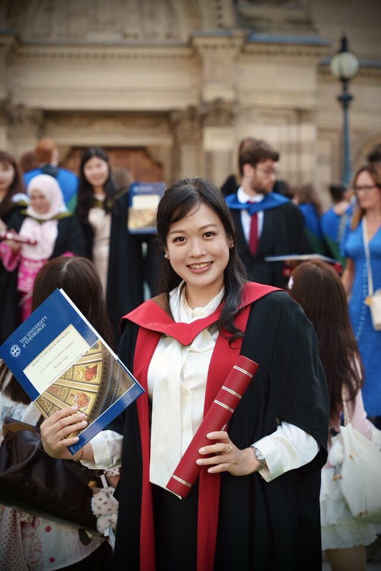
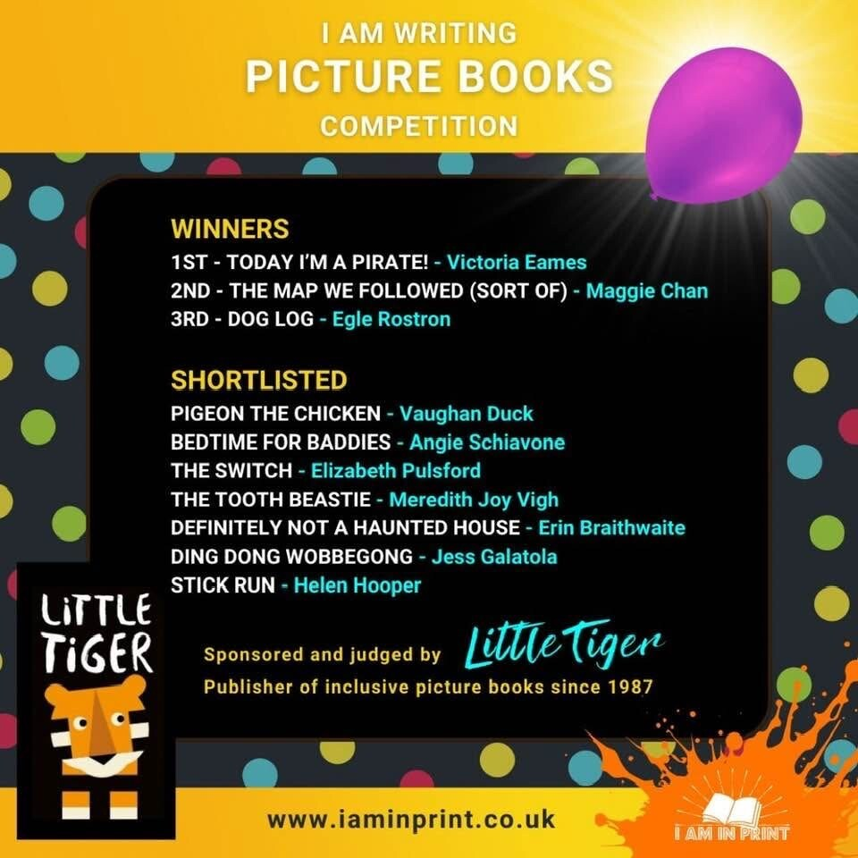
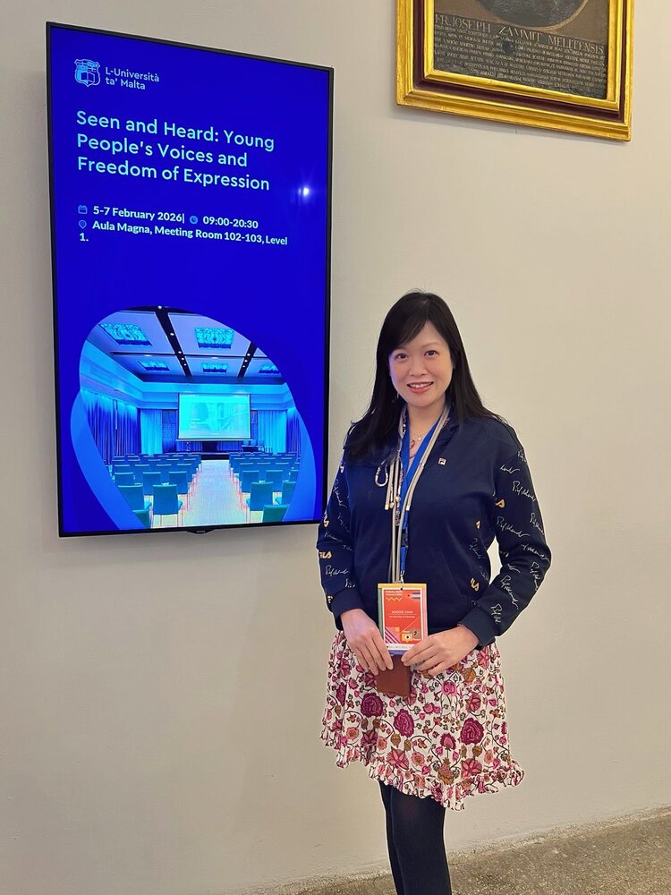
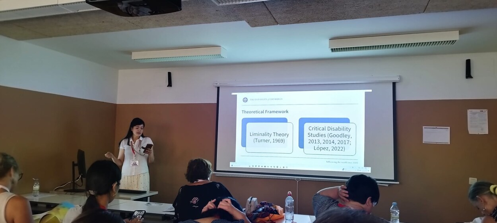
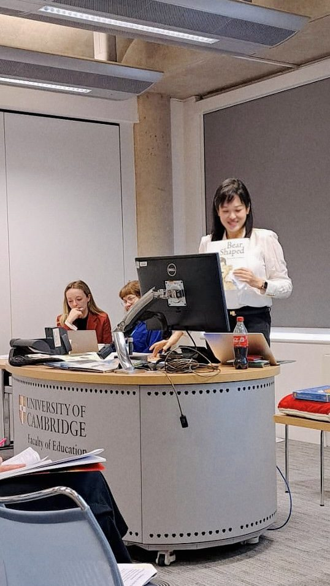
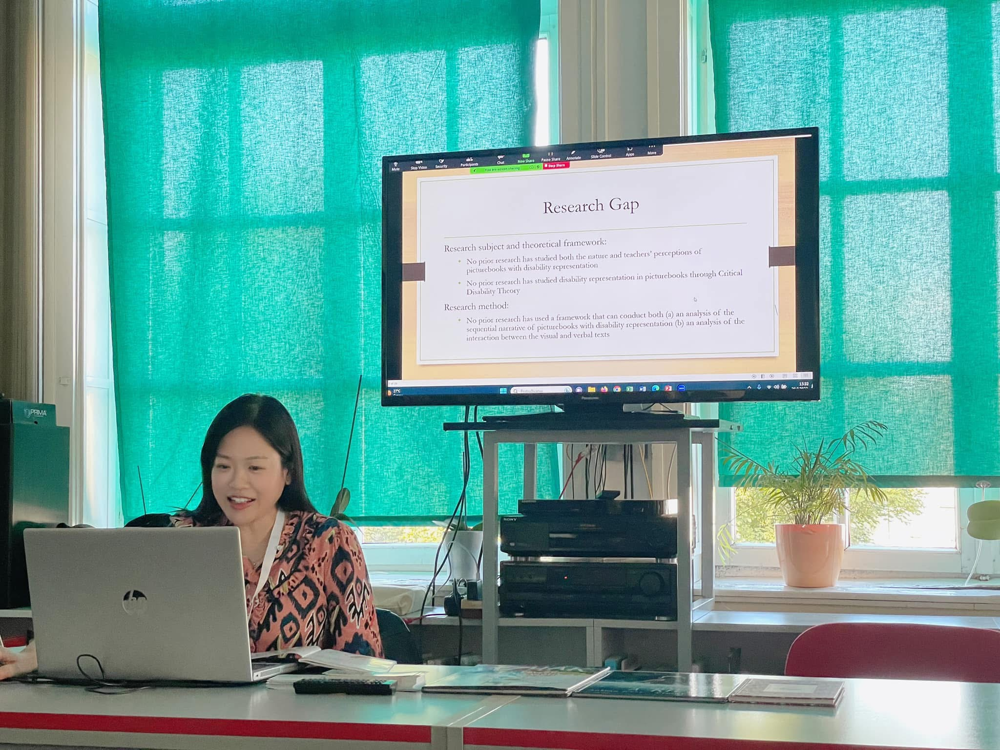
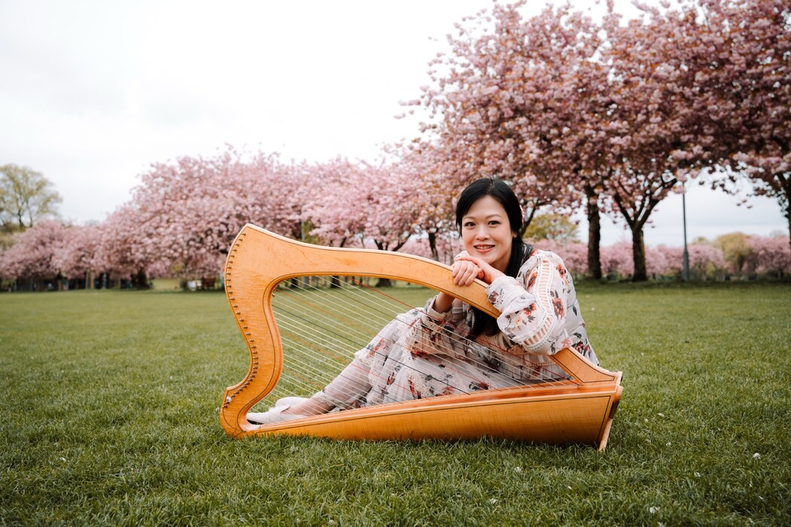

UK Literacy Association (UKLA) 61st International Conference
Presentation title pending
Conference detailsChildren’s literature, literacy and education
I’m a researcher and educator working across children’s literature, literacy and education. I study how words and images represent disability and neurodivergence in picturebooks and how stories of Chinese diasporic childhood portray cultural identity. In my article on Michael Rosen’s Sad Book, I examine how memories sustain Rosen’s bond with his son and how the stage adaptation creates a space for audiences to witness and share in that grief.
As a Postdoctoral Research Fellow at the University of KwaZulu-Natal, I study gender and sexuality in childhood and education. I also review books for IBBY UK’s nominations to the IBBY Selection of Outstanding Books for Young People with Disabilities. My reviewing work has included Reflecting Disability, a project facilitated by Beth Cox and Alexandra Strick with funding from Arts Council England.
I have taught academic English as an associate lecturer at University College London and as a lecturer at The Chinese University of Hong Kong, where I received the Faculty of Arts Outstanding Teaching Award (2017–18) and the English Language Teaching Unit Exemplary Teaching Award (2017–18 and 2020–21). At the University of Edinburgh, I have taught and supervised master’s students in Language Education and TESOL. I currently work there as a student support worker with the Disability and Learning Support Service.
I hold a PhD in Education from the University of Edinburgh, an MPhil in Second Language Education from the University of Cambridge, a Postgraduate Diploma in Education (English Language and English Literature) from the University of Hong Kong and a BA in Educational Studies from the University of York.
ORCID 0009-0006-4611-7433
My picturebooks My Adventure Diary: A Cool Friend and My School Diary: Star Pupils were published in Hong Kong in 2018. My manuscript The Map We Followed (Sort Of) took second place in the 2025 I Am Writing Picture Books Competition, organised by I Am in Print and judged by Little Tiger.



Presentation title pending
Conference detailsThe Child and the Book
Conference recordSeen and Heard: Young People’s Voices and Freedom of Expression
Conference record
10th European Network of Picturebook Research Conference
Conference record
IRSCL Congress
Conference record
Crip Kid Lit: Critical Approaches to Disability in Children’s and Young Adult Literature and Media
Conference record
9th European Network of Picturebook Research Conference
Conference record
British Educational Research Association (BERA) Annual Conference
Conference detailsVirtual presentation at Aesthetic and Pedagogic Entanglements. Presentation title pending.
Congress reportSynergy and contradiction: How picturebooks and picture books work · Homerton College, University of Cambridge
Conference programme